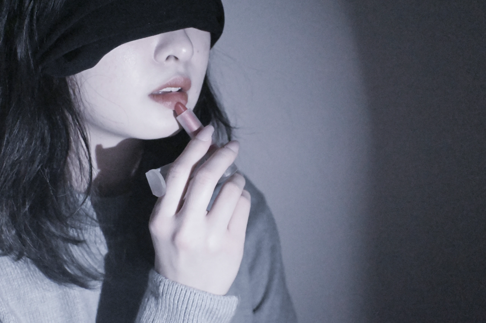
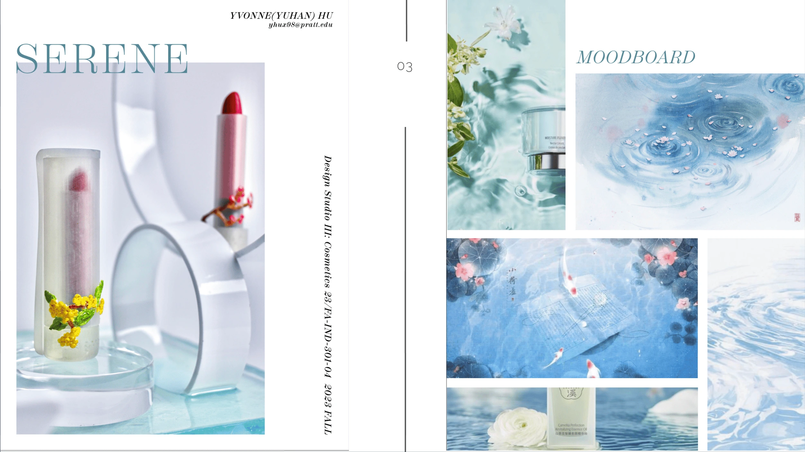
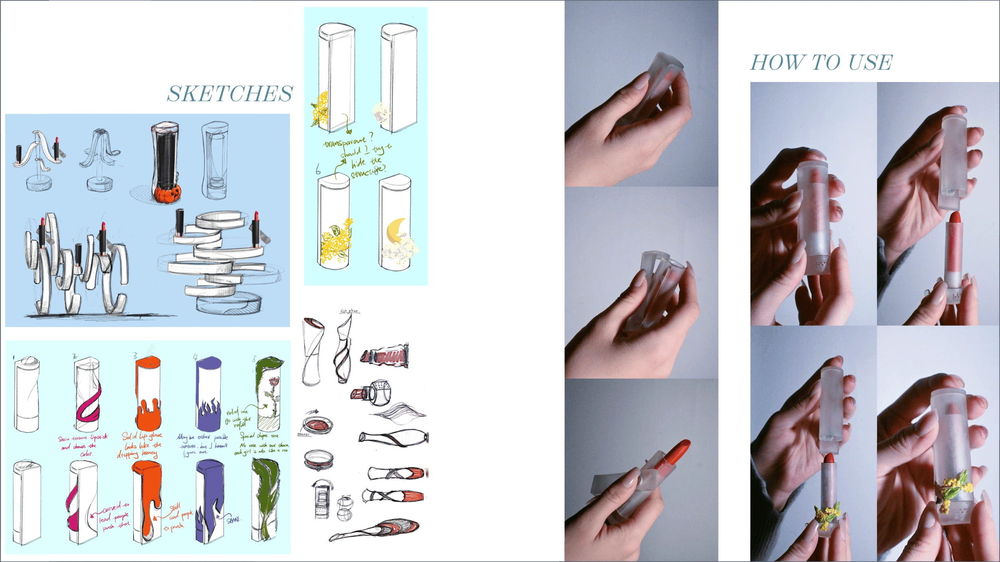
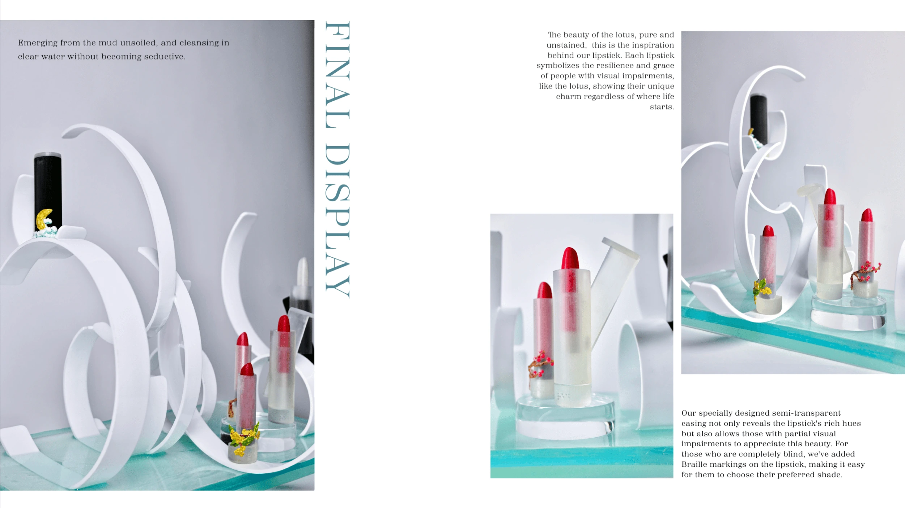
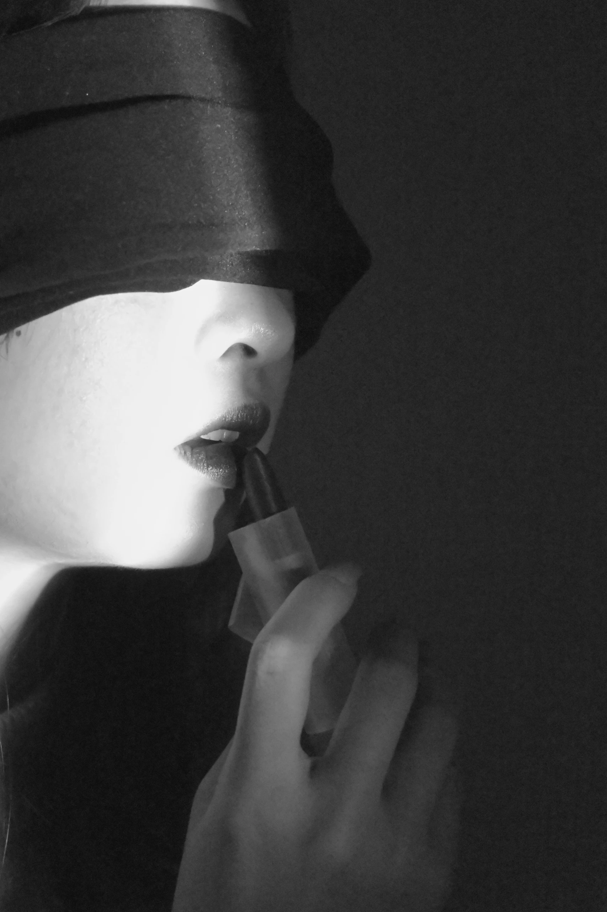

Serene
Lipstick packaging and a retail display designed for people with visual impairments.
View full process
Project Overview
Choosing our lipstick is not just for beauty, but also for a more inclusive and sustainable world. Like the lotus emerging pure from the mud, our lipstick takes you on a dual journey of vision and soul!
Design Philosophy
Inspired by the Lotus
The beauty of the lotus, pure and unstained, emerging gracefully from muddy water without becoming soiled. This is the inspiration behind Serene lipstick.
Each lipstick symbolizes the resilience and grace of people with visual impairments—like the lotus, showing their unique charm regardless of where life starts.
Inclusive Beauty
Choosing our lipstick is not just for beauty, but also for a more inclusive and sustainable world.
Like the lotus emerging pure from the mud, our lipstick takes you on a dual journey of vision and soul, where beauty transcends sight.
Moodboard
The design draws inspiration from water, lotus flowers, and tranquility. The color palette evokes serenity and purity—soft blues, mint greens, and pristine whites that reflect the calming essence of nature.

Design Process

Sketches & Exploration
The design process began with extensive sketching to explore various forms of inclusive packaging. We experimented with different shapes, textures, and tactile elements that would make the lipstick easily identifiable by touch.
How to Use
The lipstick features a transparent casing that reveals the color within, with embedded flowers serving as both decorative and tactile identifiers. Each design element is carefully considered for users with visual impairments.
Final Display

Emerging from the Mud
The final design features a semi-transparent casing that emerges from water, symbolizing the lotus rising pure and unstained. The design is both visually stunning and functionally accessible.
Tactile Beauty
Our specially designed semi-transparent casing not only reveals the lipstick's rich hues but also allows those with partial visual impairments to appreciate this beauty. Each lipstick features raised Braille markings, making it easy to choose their preferred shade.
Visual Merchandising
The display design continues the lotus theme with elegant curved structures that echo the graceful arcs of lotus petals. The semi-transparent platforms allow light to filter through, creating an ethereal shopping experience that celebrates both vision and touch.
Accessible Design
Display heights and arrangements are optimized for all customers, including those using wheelchairs or with limited reach.
Multi-Sensory Experience
The display engages multiple senses—visual beauty for sighted customers, tactile elements for touch-based selection.
Sustainable Materials
Display structures use eco-friendly materials, aligning with the brand's commitment to a sustainable world.
Impact & Future Vision
Serene represents more than a cosmetic product—it's a statement about inclusive design in the beauty industry. By making beauty accessible to people with visual impairments, we challenge the industry to think beyond traditional aesthetics.
The future of Serene includes expanding the product line to include other cosmetics with similar inclusive features, partnering with organizations for the visually impaired, and continuing to advocate for universal design in the beauty sector.
